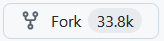

Github ?
Forge logiciel
- Gestion de tickets (bug, nouvelles fonctionnalitées ...)
- Outils de gestion de projets
- ...
Github ?
Lié à l'open source
- Rachat par Microsoft
- GitLab, https://bitbucket.org/ (Jira) ...
OpenSource Flow
Comment organiser le travail en équipe
Pas le seul : Git
Flow, Trunk base developpement ...
- Benjamin
- Contributeur.ice
- A du temps en ce moment
- De passage sur le projet
- Améliorer le produit
- Propose des contributions
- Elise
- Mainteneur.se
- N'as pas beaucoup de temps
- Passe régulièrement sur le projet
- Accompagner les contributeurs
- Resoudre les bugs urgent rapidement
- Vérifier/Valider les contributions
OpenSource Flow
- Benjamin (Contributeur)
- Hey, la feature XXX m'intéresse bien, je peux m'en occuper ?
- Elise (Mainteneur)
- Ouai, c'est bon vas y.
- Benjamin (Contributeur)
- Tiens je t'ai fait une PR tu peux me la valider
- Elise (Mainteneur)
- Le code est pas mal mais ta documentation c'est pas ouf, tu me re-travaille ça
- Benjamin (Contributeur)
- Yep, je t'ai fait une nouvelle version.
- Elise (Mainteneur)
- C'est nickel, je valide, bon travail 🙂
- Robot
- *Les commits ont été ajouté au dépot*
- Créer un dépôt Github
- Pousser notre historique local
- Créer une issue
git remote add origin url
- origin convention
- Ajoute la section [remote "origin"] dans .git/config
git push -u origin main
- Ajoute la section [branch "main"] dans .git/config
- Crée une branche dans .git/refs/remotes/origin/main
Pour Benjamin (contributeur)
Dupliquer le depot git sur son espace personnel
- On se connecte sur Github
- On recherche le dépot sur lequel on veut contribuer
- On appuie sur 
Créer une PR
- Créer une branche
- Pousser les modifications
- Faire une PR
- Associé la PR à notre issue
- Vérifier que l'issue est fermée
Valider la PR
- Valider la PR
- Vérifier que l'issue est fermée
- Vérifier l'historique du projet
Gestion des conflits
- Sync depuis GitHub
- git switch main
git pull
- git fetch
- git merge origin/main
- git rebase main branch_name
- git switch branch_name